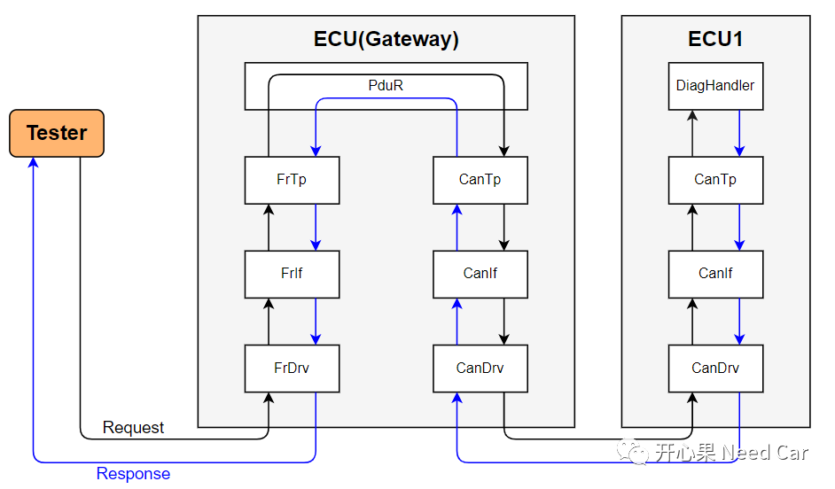
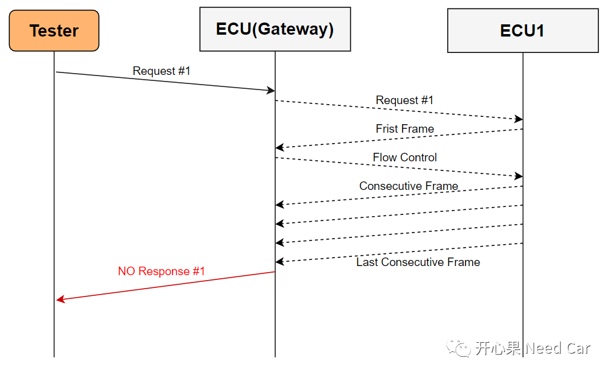
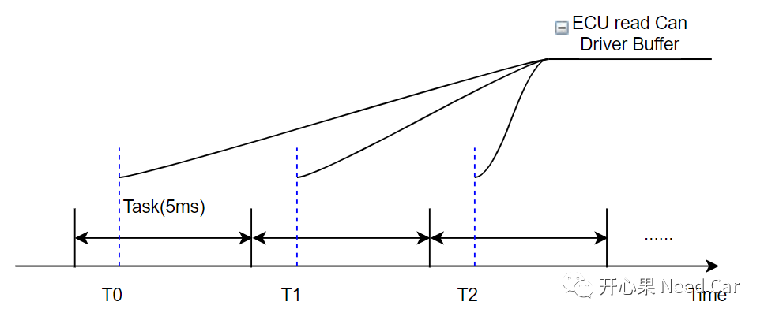
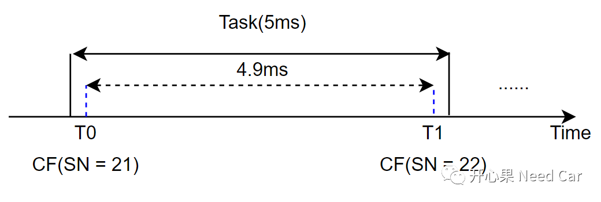
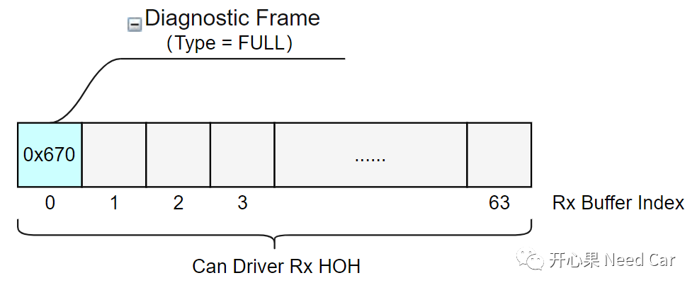
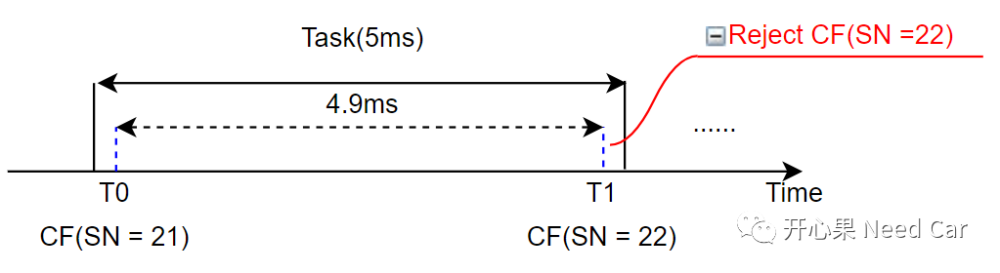
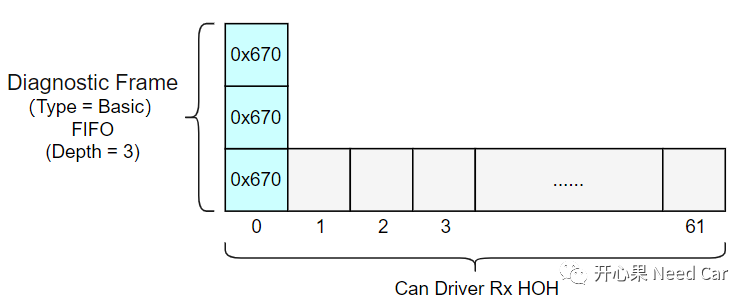

工程开发中，对于报文的接收/发送，选择Interrupt方式还是Polling方式，没有优劣之分。结合项目的实际情况，选择适合项目的方式就好。本文，分享一个Polling模式引发的丢帧问题。
诊断上位机（Tester）发送诊断请求（Request）给目标ECU1，需要经过网关ECU，如下所示：

Tester发送诊断请求（eg:$19 02 01，读取Failed的DTC），网关ECU将Request #1转发给ECU1，ECU1响应多帧数据给网关ECU，但是网关ECU没有将ECU1响应的数据反馈给Tester，示意如下所示：

工程中，诊断报文的收/发处理，采用了Polling的方式，且Polling的周期为5ms，即：每5ms，去Can Driver Buffer（mailbox）读取接收到的数据，因此，ECU1响应的诊断数据，网关ECU会每5ms读取一次，示意如下所示：
注意：既然网关节点每5ms读取一次数据，意味着，ECU1发送连续帧（CF：Consecutive Frame）的最小间隔（STmin）需要≥ 5ms，即：要求ECU1以≥5ms的间隔发送CF。因此，网关ECU给ECU1发送流控帧（FC：Flow Control）时，STmin = 5。
但是，软件的运行并不总按照我们预想的方式执行，比如：- ECU1发送CF帧，有时两个CF的间隔会小于5ms。
本文的问题中，ECU1发送的CF帧间隔，会存在小于5ms的工况。要把问题都归咎于ECU1没开发好？本问题中，固然有ECU1的问题，但是，网关ECU的鲁棒性也有待提升。我们来看一下，两个CF的间隔会小于5ms会带来什么问题。如下所示，在5ms的Task周期内，如果ECU1发送了两帧CF帧，意味着网关ECU只有两帧均接收，数据（N-PDU）才能完整，示意如下：
但是，我们知道，能否有效的接收数据，取决于软/硬件的缓存能力。本文不讨论软件的缓存，我们分析一下硬件缓存。本文问题中，网关ECU接收诊断报文时，分配了一个HRH，即：Dedicated Rx Buffers，eg：Rx Buffer Index = 0的空间，分配给诊断报文（0x670）专用，也就是我们常说的FULL模式。关于FULL CAN和BASIC CAN，可以参考前文CAN通信：Basic CAN与FIFO。
对于诊断报文，硬件上配置成FULL CAN模式，即：只给一个硬件缓存区。如果软件的上层模块不能及时取走缓存的数据，当另一个诊断报文（诊断ID相同）再次到来时，就会导致报文的丢帧问题（默认处理：Reject）。
所以，本文中，问题的根因在于上层没有及时取走CF（SN = 21）,导致CF（SN = 22）被Reject，即：丢帧。使得网关ECU收不到完整的响应数据，进而不能给出诊断Response。示意如下所示：
既然是因为Can Driver的缓存能力不足导致的，解决策略：增加驱动层的缓存能力，修改诊断报文的接收模式，由FULL模式修改为Basic模式。且配置FIFO的深度为3，确保在一个Task(5ms)周期内可以缓存3帧诊断报文，这样即可有效的避免诊断报文丢帧的问题，示意如下所示：
本文的问题中，主要是因为上层不能及时取走驱动缓存的数据导致的数据丢帧，那么增加Polling的频率，即：Polling的周期由5ms缩短到1ms或者2ms不可以吗？答：可以。但是，这样会带来另外一个问题，CPU的负载率增加。因为，相同的代码，CPU执行1次（5ms）增加到执行5次（1ms），CPU势必更繁忙，如果程序中，还有一定量的中断，那么，Task的执行有超差风险。对于实时性要求较高的嵌入式，这一点需要考虑。
所以，工程中，如果选择Polling方式处理收/发诊断报文，建议配合FIFO模式（Basic CAN）使用。
其他细节点：同一个Task中，先处理接收还是先处理发送，会涉及到某些模块状态机的切换问题，比如：CanTp模块，某个Id关联的Channel状态处于发送处理状态，如果此Id接收到新的报文，且不能缓存，则该帧可能被丢弃，进而导致诊断失败。这类问题中，优先处理发送，再处理接收可能更合理，示意如下所示：
TASK(5ms){ DiagWrite_Main(); DiagRead_Main();}
点击下方关注，一起聊聊Autosar/嵌入式，如果需要，联系作者进群，给你更专业的解答